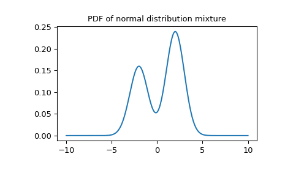

Mixture#
- class scipy.stats.Mixture(components, *, weights=None)[source]#
Representation of a mixture distribution.
A mixture distribution is the distribution of a random variable defined in the following way: first, a random variable is selected from
componentsaccording to the probabilities given byweights, then the selected random variable is realized.- Parameters:
- componentssequence of ContinuousDistribution
The underlying instances of ContinuousDistribution. All must have scalar shape parameters (if any); e.g., the
pdfevaluated at a scalar argument must return a scalar.- weightssequence of floats, optional
The corresponding probabilities of selecting each random variable. Must be non-negative and sum to one. The default behavior is to weight all components equally.
- Attributes:
- componentssequence of ContinuousDistribution
The underlying instances of ContinuousDistribution.
- weightsndarray
The corresponding probabilities of selecting each random variable.
Methods
support()Support of the random variable
sample([shape, rng, method])Random sample from the distribution.
moment([order, kind, method])Raw, central, or standard moment of positive integer order.
mean(*[, method])Mean (raw first moment about the origin)
median(*[, method])Median (50th percentile)
mode(*[, method])Mode (most likely value)
variance(*[, method])Variance (central second moment)
standard_deviation(*[, method])Standard deviation (square root of the second central moment)
skewness(*[, method])Skewness (standardized third moment)
kurtosis(*[, method])Kurtosis (standardized fourth moment)
pdf(x, /, *[, method])Probability density function
logpdf(x, /, *[, method])Log of the probability density function
cdf(x[, y, method])Cumulative distribution function
icdf(p, /, *[, method])Inverse of the cumulative distribution function.
ccdf(x[, y, method])Complementary cumulative distribution function
iccdf(p, /, *[, method])Inverse complementary cumulative distribution function.
logcdf(x[, y, method])Log of the cumulative distribution function
ilogcdf(p, /, *[, method])Inverse of the logarithm of the cumulative distribution function.
logccdf(x[, y, method])Log of the complementary cumulative distribution function
ilogccdf(p, /, *[, method])Inverse of the log of the complementary cumulative distribution function.
entropy(*[, method])Differential entropy
Notes
The following abbreviations are used throughout the documentation.
PDF: probability density function
CDF: cumulative distribution function
CCDF: complementary CDF
entropy: differential entropy
log-F: logarithm of F (e.g. log-CDF)
inverse F: inverse function of F (e.g. inverse CDF)
References
[1]Mixture distribution, Wikipedia, https://en.wikipedia.org/wiki/Mixture_distribution
Examples
A mixture of normal distributions:
>>> import numpy as np >>> from scipy import stats >>> import matplotlib.pyplot as plt >>> X1 = stats.Normal(mu=-2, sigma=1) >>> X2 = stats.Normal(mu=2, sigma=1) >>> mixture = stats.Mixture([X1, X2], weights=[0.4, 0.6]) >>> print(f'mean: {mixture.mean():.2f}, ' ... f'median: {mixture.median():.2f}, ' ... f'mode: {mixture.mode():.2f}') mean: 0.40, median: 1.04, mode: 2.00 >>> x = np.linspace(-10, 10, 300) >>> plt.plot(x, mixture.pdf(x)) >>> plt.title('PDF of normal distribution mixture') >>> plt.show()
